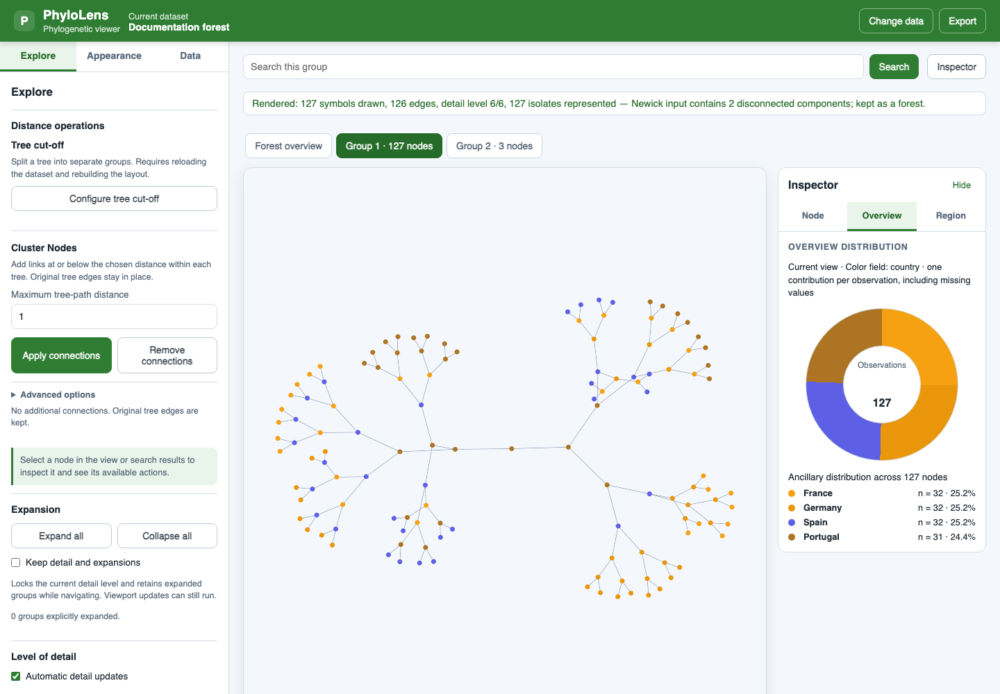

PhyloLens documentation
PhyloLens is a browser viewer for fully labelled trees, minimum spanning trees (MSTs) and forests. It displays large trees at several levels of detail and allows you to examine individual nodes and their associated observations.
This manual describes how to load data, explore a tree and save the current view. It also explains how to use the browser library and the preparation service in another application.
Getting started
- Load your first tree and attach sample information.
- Prepare input files in Newick or allelic-profile format.
- Explore the display, search for nodes and expand groups.
- Use PhyloLens in your application.

Trees and observations
You can import an existing Newick tree or construct a tree from MLST/cgMLST-style allelic profiles using goeBURST. Separate trees are displayed as components of a forest. PhyloLens does not add connections between them.
Ancillary tables supply observations such as country, collection year or resistance category. Several isolates may share one typing profile. Their original identifiers and observations remain available even when the profile is displayed as one node.
A technical root determines the direction used for branch navigation and detail groups. It does not identify an evolutionary ancestor. Additional distance connections are a display overlay and do not become branches of the tree.